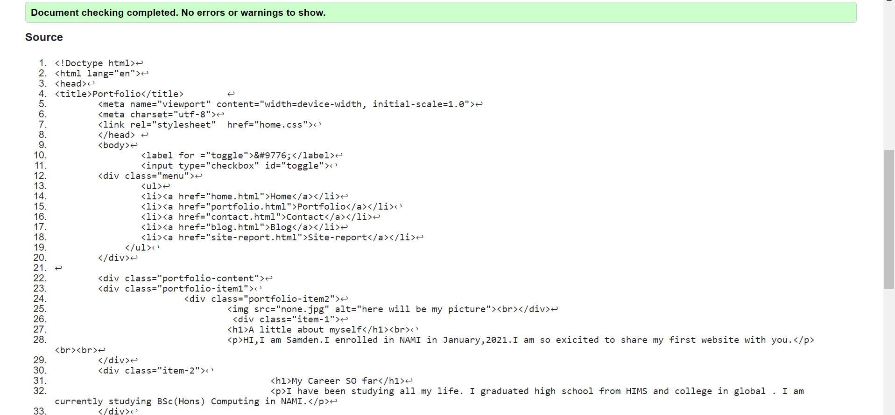
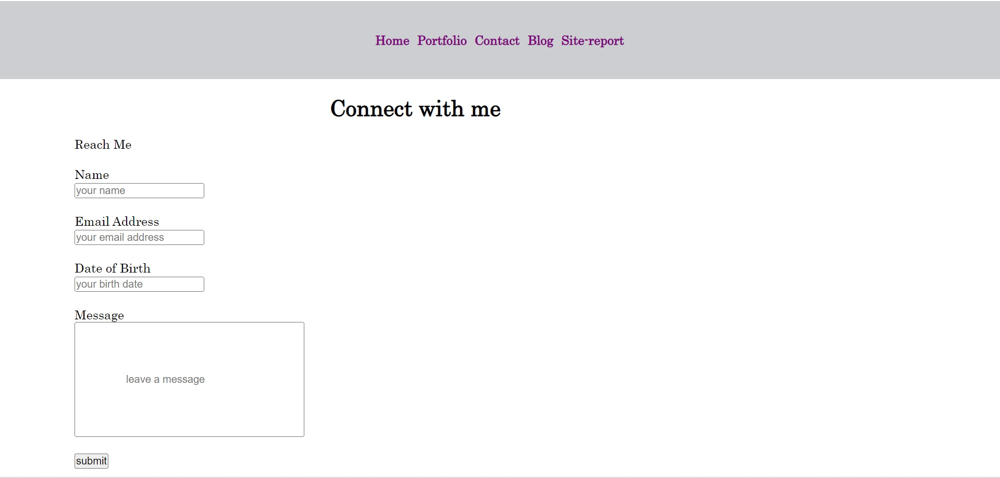
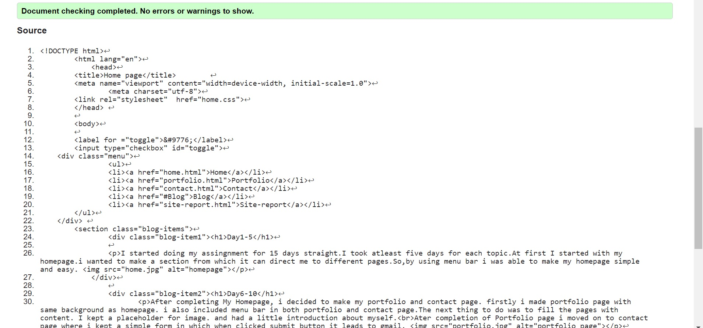
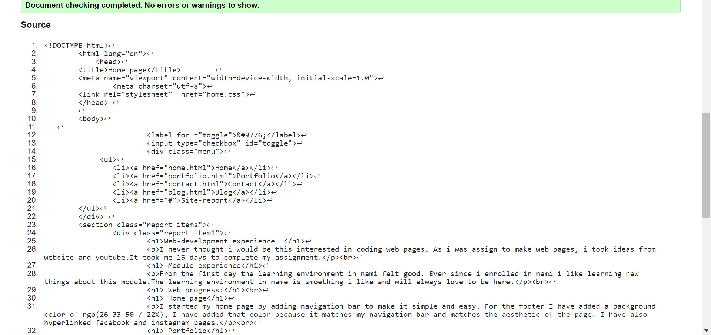
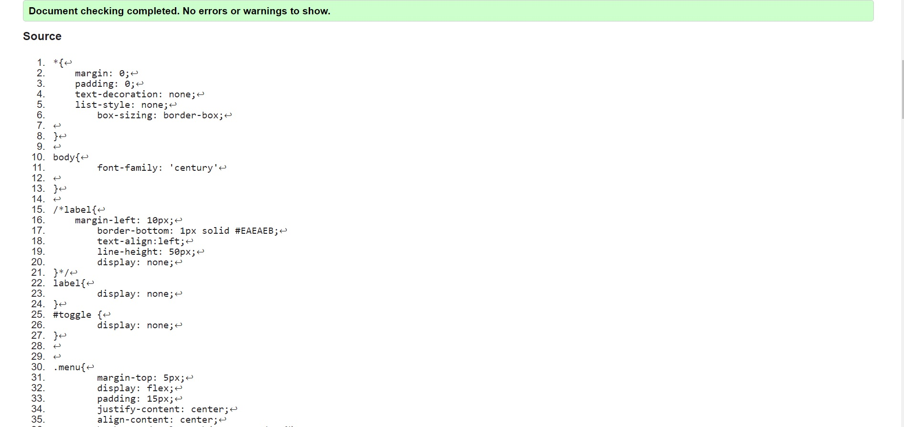

I never thought i would be this interested in coding web pages. As i was assign to make web pages, i took ideas from website and youtube.It took me 15 days to complete my assignment.
From the first day the learning environment in nami felt good. Ever since i enrolled in nami i like learning new things about this module.The learning environment in name is smoething i like and will always love to be here.
I started my home page by adding navigation bar to make it simple and easy. For the footer I have added a background color of rgb(26 33 50 / 22%); I have added that color because it matches my navigation bar and matches the aesthetic of the page. I have also hyperlinked facebook and instagram pages.
For portfolio i used a placeholder to keep my image. I also added my description.
I added certain placeholders and with the help of it i was able to make a form where users can fill up and submit to contact me.Users can also message me.
AssamWebTech(2021)How to create a Responsive Navigation menu bar using HTML, CSS #Visual Studio Code.Sep23
Available at:
https://www.youtube.com/watch?v=Io4gfEviZP8&list=LL&index=1&t=171s&ab_
channel=AssamWebTech
(Accesssed date:feb24)
home page validation
portfolio page validation
contact page validation
blog page validation
site-report page validation
css page validation